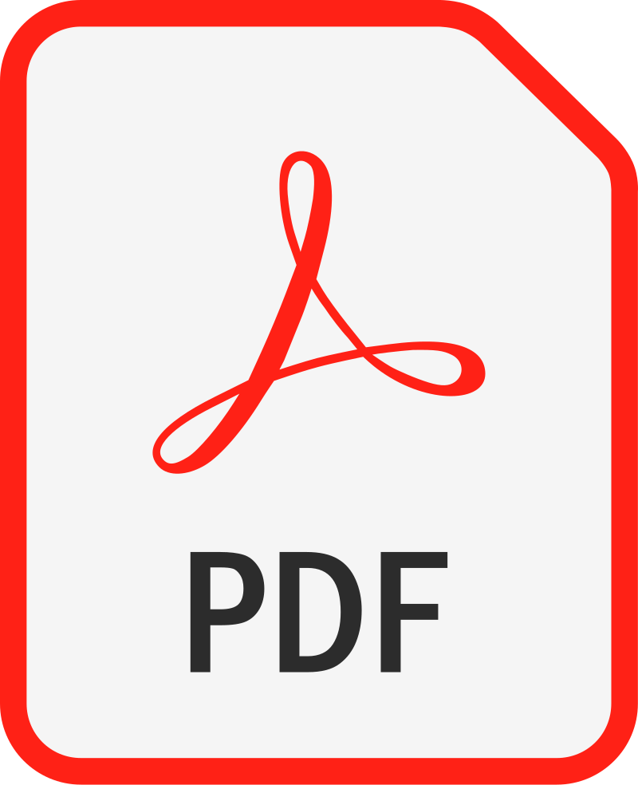

Administrateur Systèmes, Réseaux et Sécurité
Mise à jour le 20/02/2025
Parcours OC =>
| La doc du parcours =>

p1 - Démarrez votre formation d'Administrateur Systèmes, Réseaux et Sécurité
p2 - Gérer les demandes au quotidien
p3 - Mettez en place et documentez le réseau local d'une startup
p4 - Déployez une architecture n-tiers pour une PME
p5 - Mettez en place des services web sécurisés
p6 - Raccordez une entité et ses postes de travail au SI de votre entreprise
p7 - Configurez des services réseaux et des équipements d'interconnexion
p8 - Supervisez le SI d'une entreprise
p9 - Gérez le parc informatique d'une PME
p10 - Mettez en place une nouvelle solution de sauvegarde
p11 - Sécurisez le réseau d'une grande entreprise
Projet 1 : Démarrez votre formation d'Administrateur Systèmes, Réseauxs et Sécurité
Découvrez le monde des Systèmes d'Information =>
ici
=> OK le 26/01/2025 ->
Engagez-vous dans votre formation OpenClassrooms =>
ici
=> OK le 28/10/2024 ->
Haut
Projet 2 : Gérer les demandes au quotidien
Découvrez la gestion de tickets avec Zendesk =>
ici
=> OK le 29/01/2025 ->
Haut
Partie 3 : Mettez en place et documentez le réseau local d'une startup
Concevez votre réseau TCP/IP =>
ici
=> OK le 30/01/2025 ->
Maîtrisez vos applications et réseaux TCP/IP =>
ici
Haut
Partie 4 : Déployez une architecture n-tiers pour une PME
1 - Initiez vous à Linux =>
ici
2 - Gérez votre serveur Linux et ses services =>
ici
3 - Virtualisez votre architecture et vos environnements de travail
ici
4 - Administrez un système Linux =>
ici
5 - Implémentez vos bases de données relationnelles avec SQL =>
ici
Haut
Partie 5 : Mettez en place des services web sécurisés
1 - Sécurisez vos applications =>
ici
2 - Sécurisez votre réseau grâce aux VPN et Firewall =>
ici
Haut
Partie 6 : Raccordez une entité et ses postes de travail au SI de votre entreprise
1 - Sécurisez grâce au VPN => déjà présent ailleurs
2 - Prenez en main Windows Server =>
ici
3 - Centralisez et sécurisez votre annuaire Active Directory =>
ici
4 - Planifiez vos tâches avec des scripts PowerShell sur Windows Server =>
ici
Haut
Partie 7 : Configurez es services réseaux et des équipements d'interconnexion
1 - Administrez une architecture réseau avec CISCO =>
ici
Haut
Partie 8 : Supervisez le SI d'une entreprise
1 - Mettez en place un outil de supervision de production avec Nagios =>
ici
Haut
Partie 9 : Gérez le parc informatique d'une PME
1 - Power shell sur Windows server => déjà présent ailleurs
2 - Améliorez l'impact de vos présentations =>
ici
3 - virtualisez poste de travail => présent ailleurs
Haut
Partie 10 : Mettez en place une nouvelle solution de sauvegarde
1 - Déployez un plan de sauvegarde informatique =>
ici
Haut
Partie 11 : Sécurisez le réseau d'une grande entreprise
1 - Sécurisez vos infrastructures =>
ici
2 - sécurisez vos applications => déjà présent ailleurs
3 - Planifiez une politique d'audit au sein de votre entreprise =>
ici
Haut